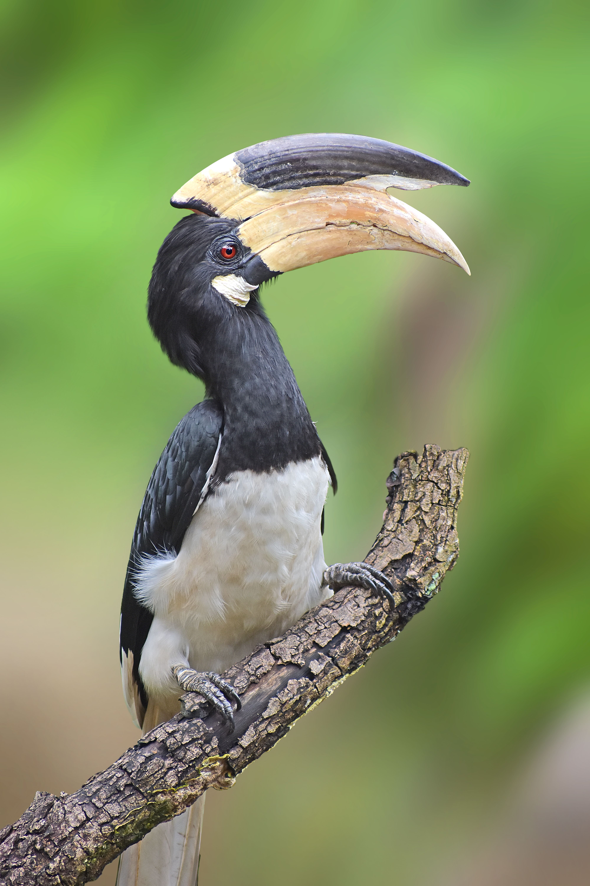

The Malabar Pied Hornbill is a large black-and-white hornbill of the forests of the Indian subcontinent. Its enormous bill and casque give it a distinctive appearance, while its loud calls can reveal its presence before the bird is seen. It feeds mainly on fruit but also takes insects and other small animals and plays an important role in dispersing seeds. Its large black-and-white body, massive pale bill, and prominent casque distinguish it from smaller pied hornbills and other forest hornbills. Compared with the similar Indian Grey Hornbill, it is distinguished by the combination of features described above. Its preference for tropical forests, forest edges, plantations, and wooded landscapes also helps separate it from species that use different habitats. Its characteristic behaviour, including usually found in pairs or small groups; spends much of its time in the canopy searching for fruit, provides another useful field clue. Taken together, these differences make it easier to distinguish from similar species when the bird is seen clearly.